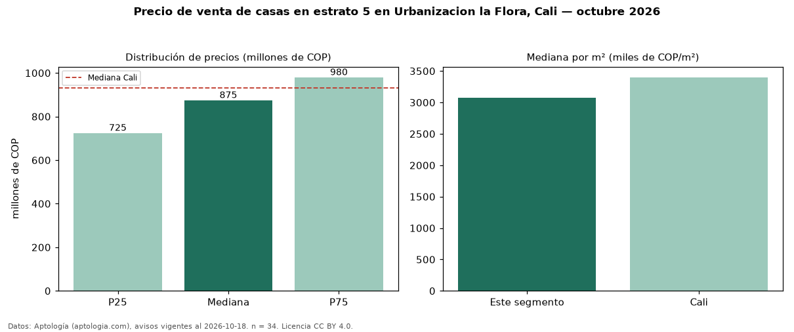

Precio de venta de casas en estrato 5 en Urbanizacion la Flora, Cali — octubre 2026
Con 34 avisos vigentes, el precio mediano de casas en estrato 5 en venta en Urbanizacion la Flora, Cali es COP 875 millones. Frente a la mediana de toda la vivienda de estrato 5 de Urbanizacion la Flora (COP 564 millones, n = 108), queda 55 % por encima; este segmento reúne el 31 % de esos avisos. Por metro cuadrado, la mediana es COP 3,08 millones/m² (n = 34), 36 % por debajo del conjunto de referencia (COP 4,79 millones/m²). El área mediana anunciada es 294 m². El segmento con más oferta es el de 3 o más habitaciones (33 avisos, mediana COP 900 millones). La mediana de todas las casas en venta de Cali es COP 930 millones (−6 % de diferencia). La mitad central de los avisos va de COP 725 millones a COP 980 millones (razón 1,4), una dispersión baja. Datos: Aptología (aptologia.com), CC BY 4.0 — https://www.aptologia.com/casas-en-venta/cali/urbanizacion-la-flora. Archivos: PDF, CSV con las cifras y gráfica PNG.

| Avisos únicos | 34 |
|---|---|
| Percentil 25 | COP 725.000.000 |
| Mediana | COP 875.000.000 |
| Percentil 75 | COP 980.000.000 |
| Mediana por m² | COP 3.077.716 |
Fuente: avisos vigentes de portales inmobiliarios recopilados por Aptología, deduplicados (mínimo 30 avisos únicos por celda). Precios pedidos, no cerrados. Fecha: 2026-10-18.